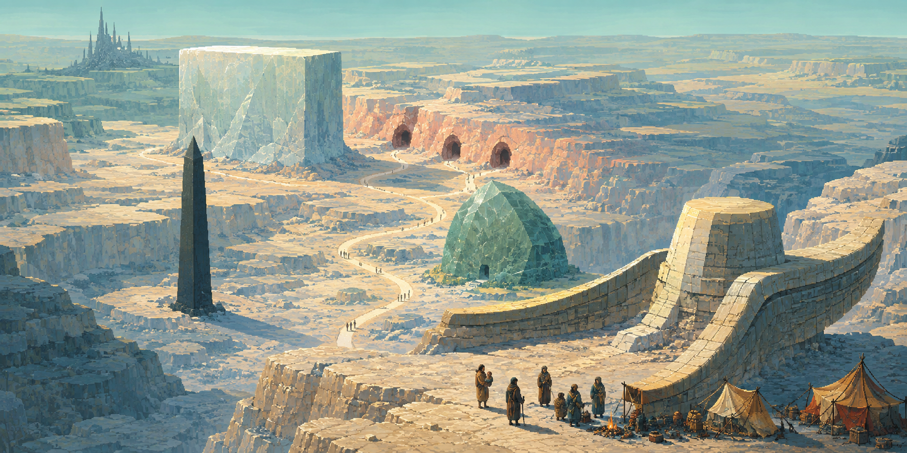
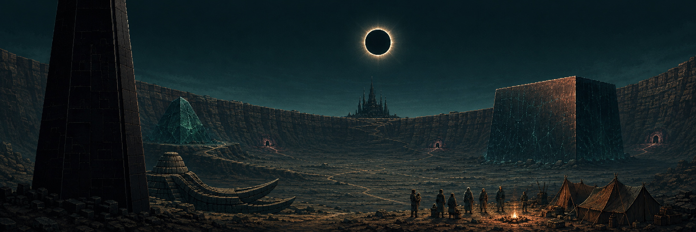
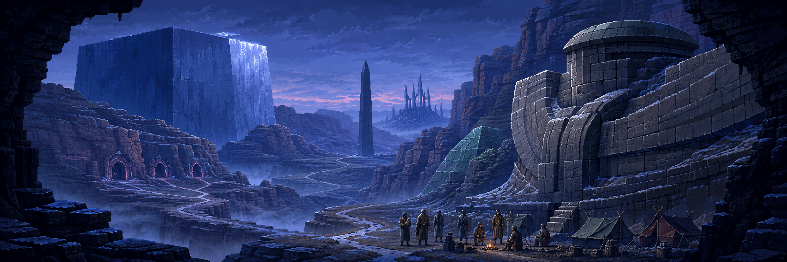
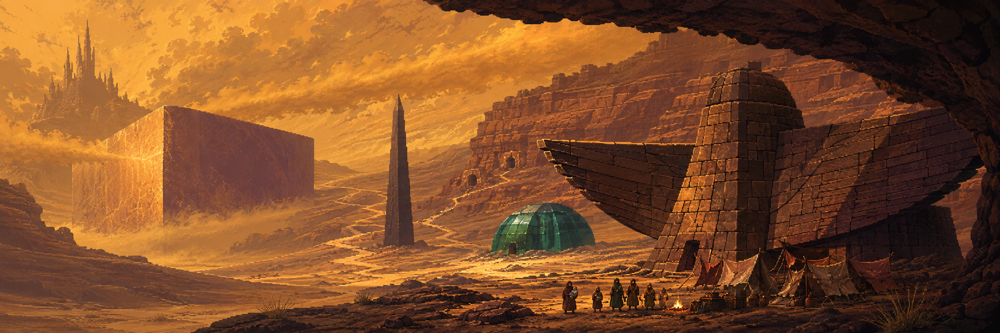

01Full size ↗
Porcelain Dawn
Chalk, celadon and apricot. High overlook, open terraces, first sunlight.
Four independent explorations of color, space, light and mood. Select an image to view it full size.

Chalk, celadon and apricot. High overlook, open terraces, first sunlight.

Petrol teal and copper. Low basin view, eclipsed midday, monumental silhouettes.

Cobalt and silver. Sheltered canyon, cold predawn, layered switchbacks.

Saffron, rust and aubergine. Low diagonal view, late-afternoon dust, wind and shelter.